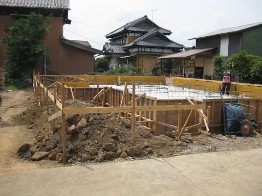

会社概要
アクセス
新築について
リフォームについて
施工事例
よくある質問FAQ
スタッフ紹介
お問い合わせ
新着情報一覧
家が建つまでの流れ
1.面談
まずはお客様の理想をお聞かせください 過去の施工事例を交え、どのようなコンセプトの家を設計するのが良いかをお客様と一緒に考えます。
2.プランのご提案
初回のお打ち合わせ内容を基に、最適なプランをご提案いたします。 このプランをたたき台に、より良い住宅になるように内容を詰めていきます。
3.住宅模型を見ながら最終チェック
プランの詳細が確定したら、完成した住宅の簡易模型を作成いたします。 この簡易模型を見ながら最終的なチェックをしていきます。
4.設計及び工事契約
プランが固まりましたら、弊社と設計と工事に関係する契約を結んでいただきます。 費用は施工する面積により異なります。
5.詳細図面の作成
実際に家を建てるための詳細設計を行います。 コンセントの位置や外壁の素材など、細かい部分を決めながら作成していきます。
6.建築確認申請
家を建てるために必要な申請や手続きを行います。
7.地鎮祭
家を建てる土地に神主さんを呼んで、地鎮祭と呼ばれる祭事を行います。 安全祈願と称されることもあります。
8.工事開始

地鎮祭が終わり、建築許可がおりたら工事の開始になります。
9.中間検査
工事の途中で、役所による中間の検査が入ります。 申請通りの建物を作成しているかをチェックします。
10.完了検査
建物が完成後、設計通りの建物が完成しているかどうか、役所によるチェックが入ります。
11.引き渡し
完了検査を合格しましたら、お客様に建物をお引渡しいたします。
<< 新築について
読売工務店株式会社
〒108-0014 京都港区芝5-26-16
TEL 03-3455-0221
一級建築士事務所
東京都知事登録 第-12345-号
新築について
リフォームについて
施工事例
よくある質問FAQ
スタッフ紹介
会社概要
アクセス
新着情報
お問い合わせ